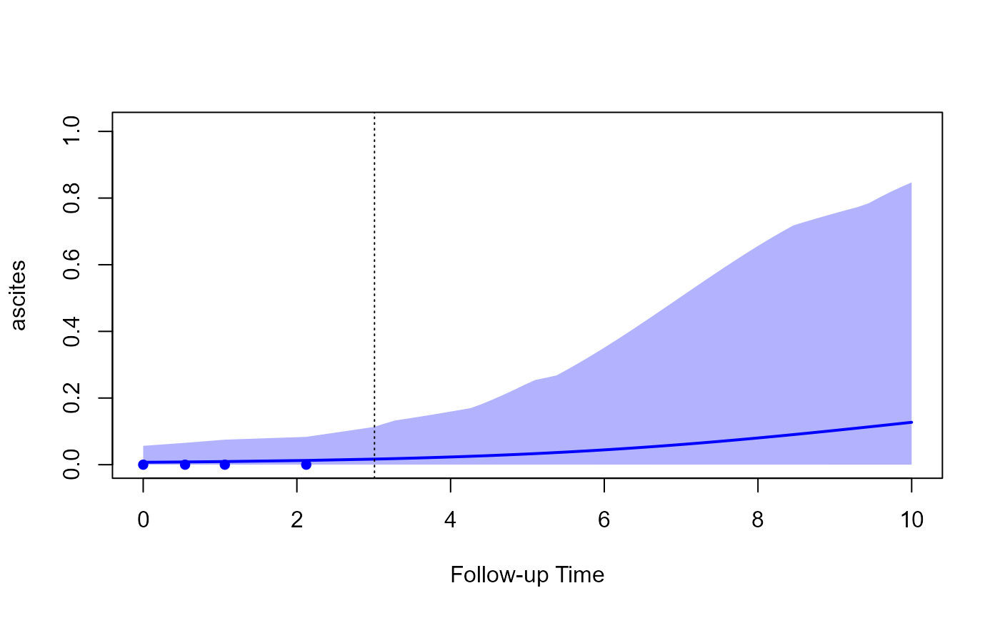

Predictions from Joint Models
predict.RdPredict method for object of class "jm".
# S3 method for jm predict(object, newdata = NULL, newdata2 = NULL, times = NULL, process = c("longitudinal", "event"), type_pred = c("response", "link"), type = c("subject_specific", "mean_subject"), level = 0.95, return_newdata = FALSE, n_samples = 200L, n_mcmc = 55L, cores = NULL, seed = 123L, ...) # S3 method for predict_jm plot(x, x2 = NULL, subject = 1, outcomes = 1, fun_long = NULL, fun_event = NULL, CI_long = TRUE, CI_event = TRUE, xlab = "Follow-up Time", ylab_long = NULL, ylab_event = "Cumulative Risk", main = "", lwd_long = 2, lwd_event = 2, col_line_long = "blue", col_line_event = "red", pch_points = 16, col_points = "blue", cex_points = 1, fill_CI_long = "#0000FF44", fill_CI_event = "#FF000044", cex_xlab = 1, cex_ylab_long = 1, cex_ylab_event = 1, cex_main = 1, cex_axis = 1, col_axis = "black", pos_ylab_long = c(0.1, 2, 0.08), bg = "white", ...)
Arguments
| object | an object inheriting from class |
|---|---|
| newdata, newdata2 | data.frames. |
| times | a numeric vector of future times to calculate predictions. |
| process | for which process to calculation predictions, for the longitudinal outcomes or the event times. |
| type_pred | type of predictions; options are |
| type | level of predictions; only relevant when |
| level | the level of the credible interval. |
| return_newdata | logical; should |
| n_samples | the number of samples to use from the original MCMC sample of |
| n_mcmc | the number of Metropolis-Hastings iterations for sampling the random effects per iteration of |
| cores | how many number of cores to use. If there more than 20 subjects in |
| seed | an integer denoting the seed. |
| x, x2 | objects returned by |
| subject | when multiple subjects are included in the data.frames |
| outcomes | when multiple longitudinal outcomes are included in the data.frames |
| fun_long, fun_event | function to apply to the predictions for the longitudinal and event outcomes, respectively. When multiple longitudinal outcomes are plotted, |
| CI_long, CI_event | logical; should credible interval areas be plotted. |
| xlab, ylab_long, ylab_event | characture strings or a chracter vector for |
| lwd_long, lwd_event, col_line_long, col_line_event, main, fill_CI_long, fill_CI_event, cex_xlab, cex_ylab_long, cex_ylab_event, cex_main, cex_axis, pch_points, col_points, cex_points, col_axis, bg | graphical parameters; see |
| pos_ylab_long | controls the position of the y-axis labels when multiple longitudinal outcomes are plotted. |
| ... | extra aguments; currently none is used. |
Details
A detailed description of the methodology behind these predictions is given here: https://drizopoulos.github.io/JMbayes2/articles/Dynamic_Predictions.html.
Value
Method predict() returns a list or a data.frame (if return_newdata was set to TRUE) with the predictions.
Method plot() produces figures of the predictions from a single subject.
Author
Dimitris Rizopoulos d.rizopoulos@erasmusmc.nl
See also
Examples
# \donttest{ # We fit a multivariate joint model pbc2.id$status2 <- as.numeric(pbc2.id$status != 'alive') CoxFit <- coxph(Surv(years, status2) ~ sex, data = pbc2.id) fm1 <- lme(log(serBilir) ~ ns(year, 3) * sex, data = pbc2, random = ~ ns(year, 3) | id, control = lmeControl(opt = 'optim')) fm2 <- lme(prothrombin ~ ns(year, 2) * sex, data = pbc2, random = ~ ns(year, 2) | id, control = lmeControl(opt = 'optim')) fm3 <- mixed_model(ascites ~ year * sex, data = pbc2, random = ~ year | id, family = binomial()) jointFit <- jm(CoxFit, list(fm1, fm2, fm3), time_var = "year", n_chains = 1L) # we select the subject for whom we want to calculate predictions # we use measurements up to follow-up year 3; we also set that the patients # were alive up to this time point t0 <- 3 ND <- pbc2[pbc2$id %in% c(2, 25), ] ND <- ND[ND$year < t0, ] ND$status2 <- 0 ND$years <- t0 # predictions for the longitudinal outcomes using newdata predLong1 <- predict(jointFit, newdata = ND, return_newdata = TRUE) # predictions for the longitudinal outcomes at future time points # from year 3 to 10 predLong2 <- predict(jointFit, newdata = ND, times = seq(t0, 10, length.out = 51), return_newdata = TRUE) # predictions for the event outcome at future time points # from year 3 to 10 predSurv <- predict(jointFit, newdata = ND, process = "event", times = seq(t0, 10, length.out = 51), return_newdata = TRUE) plot(predLong1)# combined into one plot, the first longitudinal outcome and cumulative risk plot(predLong2, predSurv, outcomes = 1)# all three longitudinal outcomes, we display survival probabilities instead # of cumulative risk, and we transform serum bilirubin to the original scale plot(predLong2, predSurv, outcomes = 1:3, fun_event = function (x) 1 - x, fun_long = list(exp, identity, identity), ylab_event = "Survival Probabilities", ylab_long = c("Serum Bilirubin", "Prothrombin", "Ascites"), pos_ylab_long = c(1.9, 1.9, 0.08))# }